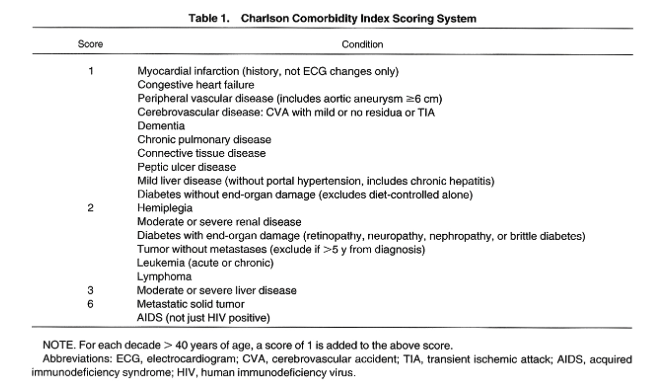

|
Table 2 One and Two-Year Survival Probabilities** Across Charlson Comorbidity Index Levels Albumin ≤ 3.5g/dL |
||||||
|---|---|---|---|---|---|---|
| CCI Level | n | Frequency* | Probability of 1 yr survival | 95% confidence interval | Probability of 2 yr survival | confidence interval |
| 2-3 | 34 | 2% | 0.91 | (0.81-1.00) | 0.87 | (0.77-0.99) |
| 4-5 | 97 | 6% | 0.73 | (0.64-0.82) | 0.61 | (0.49-0.73) |
| 6-7 | 173 | 10% | 0.69 | (0.62-0.77) | 0.49 | (0.41-0.59) |
| >8 | 138 | 8% | 0.52 | (0.43-0.61) | 0.30 | (0.20-0.40) |
| Albumin ≥ 3.5g/dL CCI | ||||||
| CCI Level | n | Frequency* | Probability of 1 yr survival | 95% confidence interval | Probability of 2 yr survival | confidence interval |
| 2-3 | 230 | 13% | 0.93 | (0.90-0.96) | 0.89 | (0.84-0.93) |
| 4-5 | 299 | 17% | 0.89 | (0.85-0.92) | 0.75 | (0.69-0.80) |
| 6-7 | 488 | 28% | 0.84 | (0.80-0.87) | 0.67 | (0.63-0.72) |
| >8 | 302 | 17% | 0.75 | (0.70-0.80) | 0.52 | (0.45-0.58) |
*Frequency of subjects within groups divided by CCI Level and serum albumin
** Survival probabilityestimates are based on observation of 1761 incident and prevalent hemodialysis patients from 41 dialysis facilities of Dialysis Clinic Inc.[8] See text for details.